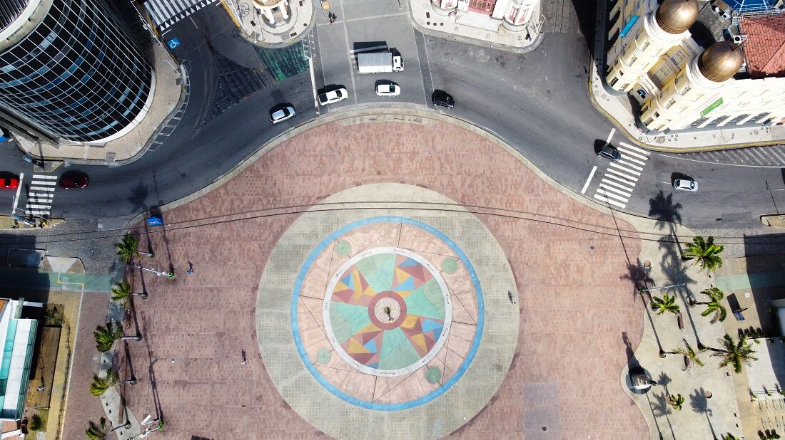

O Marco Zero é um dos pontos turísticos mais emblemáticos da cidade do Recife, localizado no bairro do Recife Antigo. Ele marca o início da cidade e é um importante marco histórico e cultural.
Construído em 1938, o Marco Zero é um grande círculo de pedras com um mapa da cidade esculpido no centro. É um local de encontro para moradores e visitantes, com vista para o Rio Capibaribe e a Ponte Maurício de Nassau.
Além de sua importância histórica, o Marco Zero também é palco de eventos culturais, shows, feiras e festivais ao longo do ano. É um lugar vibrante e cheio de vida, onde se pode apreciar a arquitetura, a arte urbana e a atmosfera única do Recife.